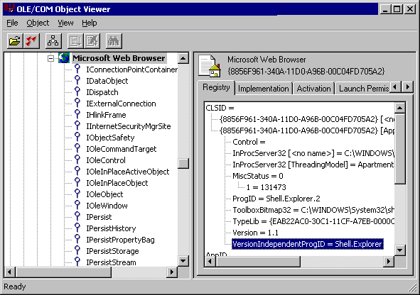
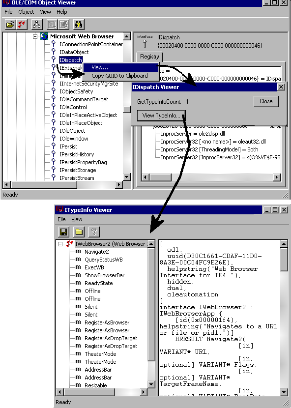

A short introduction
COM stands for "Component Object Model". It is the Microsoft way to interconnect software using a common interface. These interfaces are defined in a COM Object.
Before COM, you had to know the exact implementation of a program before you could 'interface' with it. Using COM, you can now "talk" to its defined Object(s). The only things you have to know are the names of the Objects that are used and which 'properties' or 'methods' they have.
These are the two basic characteristics of an Object. You can see a 'property' as the data storage of an Object. A 'method' can be seen as an internal function call to do something with the data.
It just depends. AutoIt has a lot of built-in functions and a huge library of UDF's. You can do most of your programming with these. However if you need special 'interfacing' to other applications, using COM might save you some lines of script. Scripters have to be aware that the existence of COM Objects depend HEAVILY on the Operating System AND the installed software. The examples below have all been tested under a 'plain' Windows XP professional version with Microsoft Office 2000.
Let's say you want to minimize all open windows. You could do this using regular AutoIt functions like WinList and WinSetState. However, two lines of COM-code can give you the same result:
$oShell = ObjCreate("shell.application")
$oShell.MinimizeAll
Side note: The example is no longer the shortest way to minimize all windows after the introduction of the WinMinimizeAll() function in AutoIt.
On the first line we create a new object called "shell.application". This is an internal Windows object, defined in shell32.dll. The pointer to this new object is assigned to the variable $oShell. $oShell is from now on an Object variable.
On the second line, we use a Method called "MinimizeAll" to the oShell object. This will minimize all windows.
All Windows versions have a huge amount of internal Objects for various purposes. And applications like Excel or Word have also their own set of Objects.
However, it is sometimes difficult to get a list of all existing Objects defined on your system with their corresponding properties and methods. Searching at Microsoft.com or Google.com might give you some clues about the Object 'X' you want to use.
For instance, you can find information about the "shell.application" object at:
To get a peek on all objects currently installed on
your system, the "OLE/COM Object Viewer" is a
very helpful tool. This tool will be explained in a separate section below.
Let's do another example. We would like to get a HTML source code from a certain web page. You could use the internal InetGet() function to save the result to a file and retrieve it back again with FileRead(). But these lines of code do the same:
$oHTTP = ObjCreate("winhttp.winhttprequest.5.1")
$oHTTP.Open("GET","http://www.AutoItScript.com")
$oHTTP.Send()
$HTMLSource = $oHTTP.Responsetext
The (string) variable $HTMLSource now contains the complete HTML code of the AutoItScript.com home page (that is, the top HTML-Frame).
(Information about the
"winhttp.winhttprequest"
object can be found at:
http://msdn.microsoft.com/library/en-us/winhttp/http/winhttprequest.asp
)
Please mind this: The existence of Objects depend on the computer's operating system and installed programs. For example, the winhttp.winhttprequest.5.1 object only exists on computers that have at least Internet Explorer version 5 installed. When you are sharing scripts that use COM objects, be sure the objects exist on all computers.
Object variables behave a bit different than other types of AutoIt variables. An Object is not a real value, but a 'pointer' to something outside the script. So you can't perform arithmetic's, nor equations on Object variables. When you assign an Object variable a different value, the 'pointer' will automatically be released. You can, for instance, force deletion of an Object by assigning it any number or any text value.
$oHTTP = ObjCreate("winhttp.winhttprequest.5.1") ; Object
is created
$oHTTP=0
; Object is deleted
You don't need to delete Objects when you are finished. If a script exits, AutoIt tries to release all active references to Objects that had been created in the script. Same thing happens when you had defined a local Object variable inside a function, and the function ends with a return.
A very popular application of COM is to 'automate' programs. Instead of using the regular AutoIt functions like Send() or WinActivate(), you can make use of the Objects that are defined inside the program.
Here is an example that 'automates' Microsoft Excel:
$oExcel =
ObjCreate("Excel.Application")
; Create an Excel Object
$oExcel.Visible =
1 ;
Let Excel show itself
$oExcel.WorkBooks.Add
; Add a new workbook
$oExcel.ActiveWorkBook.ActiveSheet.Cells(1,1).Value="test" ; Fill a cell
sleep(4000)
;See the results for 4 seconds
$oExcel.ActiveWorkBook.Saved =
1
; Simulate a save of the Workbook
$oExcel.Quit
; Quit Excel
The complexity of controlling other programs depends on that specific program, not on the AutoIt script. If something does not work as expected you might need to consult the applications' documentation and not the AutoIt help.
In AutoIt, two special statements are designed for COM usage:
WITH/ENDWITH and the FOR/IN/NEXT loop.
The WITH/ENDWITH statement does not add functionality, but it makes your script easier to read. For instance, the previous example using Excel can also be written as:
$oExcel =
ObjCreate("Excel.Application") ;
Create an Excel Object
WITH $oExcel
.Visible =
1
; Let Excel show itself
.WorkBooks.Add
; Add a new
workbook
.ActiveWorkBook.ActiveSheet.Cells(1,1).Value="test" ; Fill a
cell
sleep(4000)
;See the results for 4 seconds
.ActiveWorkBook.Saved =
1
; Simulate a save of the Workbook
.Quit
; Quit Excel
ENDWITH
This example does not save you a lot of text, but when your object uses long lines of properties/methods, you can shorten it heavily within a WITH statement.
The FOR...IN loop is required when using Collections. Collections are a special type of Object, that exist out of multiple sub-Objects. You could see them as Arrays (Actually, the FOR..IN statement also works on Array-type variables).
Below is an example of an FOR..IN loop. This example uses a normal AutoIt array, so it has nothing to do with COM. It's just to show you the principle:
$String =
"" ;
A string for displaying purposes
$aArray[0]="a" ;
We fill an array
$aArray[1]=0
; with several
$aArray[2]=1.3434 ;
different
$aArray[3]="testestestest" ; example values.
FOR $Element IN $aArray ; Here it starts..
$String = $String & $Element & @CRLF
NEXT
; Now Show the results to the user
Msgbox(0,"For..IN Arraytest","Result: " & @CRLF & $String)
In most cases you can't use 'normal' Object methods to retrieve the elements of a collection. In 'COM'-terms they say you have to 'enumerate' them. This is where the FOR..IN loop comes in.
The Excel example below loops on cells A1:O16 on the current active sheet. If one of the cells has a value less than 5, the code replaces the value with 0 (zero):
$oExcel = ObjCreate("Excel.Application") ; Create an Excel
Object
$oExcel.Visible =
1
; Let Excel show itself
$oExcel.WorkBooks.Add
; Add a new workbook
dim
$arr[16][16]
; These lines
for $i = 0 to
15
; are just
for $j = 0 to
15
; an example to
$arr[$i][$j]
= $i
; create some
next
; cell contents.
next
$oExcel.activesheet.range("A1:O16").value = $arr ; Fill cells with example
numbers
sleep(2000)
; Wait a while before continuing
For $cell in $oExcel.ActiveSheet.Range("A1:O16")
If $cell.Value < 5 Then
$cell.Value = 0
Endif
Next
$oExcel.ActiveWorkBook.Saved = 1 ; Simulate a save of the Workbook
sleep(2000)
; Wait a while before closing
$oExcel.Quit
; Quit Excel
The following features of AutoItCOM requires profound knowledge of COM Events and COM Error handling.
If you are a newbie to COM programming, please read some good COM documentation first.
The bible of COM is the book called "Inside OLE 2" by Kraig Brockschmidt (Microsoft Press).
You can also find some COM resources on the internet (not AutoIt related):
http://msdn.microsoft.com/archive/en-us/dnarolegen/html/msdn_aboutole.asp (introduction)
http://www.garybeene.com/vb/tut-obj.htm (about Objects in Visual Basic)
http://java.sun.com/docs/books/tutorial/java/concepts/ (Using objects in Java)
http://msdn.microsoft.com/archive/en-us/dnarguion/html/drgui082399.asp (Object Events in C++)
http://www.garybeene.com/vb/tut-err.htm (Error handling in Visual Basic)
Normal COM Automation mainly uses one-way communication. You 'ask' the Object for any properties or results from a Method. However a COM Object can also 'talk back' to your script when it suits it.
This could be very handy in cases you need to wait for some COM-related action to happen.
Instead of writing a kind of loop, asking the Object if something interesting has happened, you can let the Object itself call a specific UDF in your script. Meanwhile you can do other things in your script (almost) simultaneously.
Not all Object to support events. You have to read the Object documentation carefully whether it supports events or not.
If it does, the second thing to know is the type of Events it supports. AutoItCOM can only receive 'dispatch' type events.
Finally you have to know the names of the Events the Object could generate, including their arguments (if any).
Only when you have all this information, you can start building an AutoIt script using COM Events.
Below is a snippet from a script that demonstrates how to receive Events from the Internet Explorer:
$oIE=ObjCreate("InternetExplorer.Application.1") ;
Create an Internet Explorer Object
$EventObject=ObjEvent($oIE,"IEEvent_","DWebBrowserEvents") ; Start
receiving Events.
$oIE.url= "http://www.autoitscript.com" ; Load an example web page
< BR>
;From now on, the $oIE Object generates events during web page load.
;They are handled in the event functions shown below.
;Here you can let the script wait until the user wants to finish.
...(your code here)...
$EventObject.stop
; Tell IE we want to stop receiving Events
$EventObject=0
; Kill the Event Object
$oIE.quit
; Quit IE
$oIE=0
; Remove IE from memory (not really necessary)
Exit
; End of main script
; A few Internet Explorer Event Functions.
;
; For the full list of IE Event Functions, see the MSDN WebBrowser
documentation at:
; http://msdn.microsoft.com/workshop/browser/webbrowser/reference/objects/webbrowser.asp
Func IEEvent_StatusTextChange($Text)
; In the complete script (see link below) we show the contents in a GUI
Edit box.
GUICtrlSetData ( $GUIEdit, "IE Status text changed to: "
& $Text & @CRLF, "append" )
EndFunc
Func IEEvent_BeforeNavigate($URL, $Flags, $TargetFrameName, $PostData,
$Headers, $Cancel)
; In the complete script (see link below) we show the contents in a GUI
Edit box.
; Note: the declaration is different from the one on MSDN.
GUICtrlSetData ( $GUIEdit, "BeforeNavigate: " & $URL & " Flags:
" & $Flags & @CRLF, "append")
EndFunc
Click here to view the complete script.
The main line in this script is:
$EventObject=ObjEvent($oIE,"IEEvent_",...).
This function takes
the object $oIE
and reroutes it's events to AutoIt functions whose names start with
MYEvent_. The third
parameter is optional. It is used when an Object has multiple Event interfaces
and you don't want AutoIt to choose one automatically.
The Object responsible for the continuous rerouting is
$EventObject. This variable does
not require any further attention, unless you want to stop the events.
To stop rerouting Events, you can not just delete the variable like $EventObject="". The reason is that the 'calling' Object is still holding a reference to this variable, and it won't loose it until the Object itself quits. You could solve this problem by killing the 'calling' Object, but you can also tell the Object that you don't want to receive any events by using: $EventObject.Stop. Then you can (but not really necessary) kill the Event by assigning it any value, like: $EventObject=""
If you know the names of the Events $oIE fires, you can implement the Events you are interested in by creating AutoIt UDF's with the name IE Event_Eventname(optional arguments). Be sure you use the correct number of arguments and in their correct order as specified for THAT Event function. Otherwise you might end up with unexpected values.
If you don't know (for
some reason) the names of the events, you can add a UDF with only the
prefix. In this example: Func IEEvent_($Eventname).
When an event is
received and no IEEvent_ Eventname
UDF exists, this function will be called instead and the name of
the event will be placed in the variable $Eventname.
You don't have to implement ALL event functions. Those not implemented will just be ignored.
More script examples using COM Event functions can be found in the tests directory in the AutoIt 3.1.1.xx beta ZIP distribution file, downloadable from: http://www.autoitscript.com/autoit3/files/beta/autoit/
Limitations on COM Events in AutoIt
Some Objects (like the 'WebBrowser') pass arguments to their Event Functions 'by reference'. This is intended to allow the user change these arguments and passing it back to the Object. However, AutoIt uses it's own variable scheme, which is not compatible to COM variables. This means that all values from Objects need to be converted into AutoIt variables, thus loosing the reference to the original memory space. Maybe in the near future we can solve this limitation for you !
Using COM without proper error handling can be very tricky. Especially when you are not familiar with the Objects in your script.
An AutoIt script will immediately stop execution when it detects a COM error. This is the default and also the safest setting. In this case you have to take measures in your script to prevent the error from happening.
Only if there is no way to prevent a COM error, you could install an "Error Handler" in which you take action after the error has happened. It is not a solution to make a buggy script work properly. Neither does it catch non-COM related script errors (e.g. declaration and syntax errors).
Error handling is implemented in the same way as a normal COM Event, using ObjEvent() and a user defined COM Event Function. The only difference is the usage of the fixed string "AutoIt.Error" as the name of the object.
An example:
$oMyError = ObjEvent("AutoIt.Error","MyErrFunc") ; Install a
custom error handler
; Performing a deliberate failure here (object does not exist)
$oIE = ObjCreate("InternetExplorer.Application")
$oIE.visible = 1
$oIE.bogus
if @error then Msgbox(0,"","the previous line got an error.")
Exit
; This is my custom error handler
Func MyErrFunc()
$HexNumber=hex($oMyError.number,8)
Msgbox(0,"","We intercepted a COM Error !" & @CRLF & _
"Number is: " & $HexNumber & @CRLF & _
"Windescription is: " & $oMyError.windescription )
SetError(1) ; something to check for when this function returns
Endfunc
One thing is special about the Error Event Handler, and that is the Object it returns. This is an AutoIt Error Object that contains some useful properties and methods. It's implementation is partly based on the "Err" Object in VB(script):
Properties of the AutoIt Error Object:
| .number | The Windows HRESULT value from a COM call |
| .windescription | The FormatWinError() text derived from .number |
| .source | Name of the Object generating the error (contents from ExcepInfo.source) |
| .description | Source Object's description of the error (contents from ExcepInfo.description) |
| .helpfile | Source Object's helpfile for the error (contents from ExcepInfo.helpfile) |
| .helpcontext | Source Object's helpfile context id number (contents from ExcepInfo.helpcontext) |
| .lastdllerror | The number returned from GetLastError() |
| .scriptline | The script line on which the error was generated |
Methods of the AutoIt Error Object:
| .raise | Raises an error event, initiated by the user |
| .clear | Clears the contents of the Error Object (i.e. numbers to 0, strings to "") |
A note for UDF writers
You can only have ONE Error Event Handler active per AutoIt script. If you are writing UDF's containing COM functions, you can check if the user has an Error Handler installed as follows:
$sFuncName = ObjEvent("AutoIt.Error")
if $sFuncName <> "" then Msgbox (0,"Test","User has installed Error
Handler function: " & $sFuncName)
If no Error Handler was active, you can temporarily install your own during the UDF call.
However, you can never stop an existing Error Handler without releasing the variable it had been assigned to. If the script author had installed a COM Error Handler, it's his responsibility to use a proper function that will also be able to catch COM errors generated by UDF's.
The "OLE/COM Object Viewer" is a very handy tool to get a peek on all COM objects currently installed on your system. It is part of the Windows 2000 resource kit and can be downloaded for free from: http://www.microsoft.com/windows2000/techinfo/reskit/tools/existing/oleview-o.asp
The setup of this program is a bit awkward. It will not create any start menu icon for you. Instead, a file called oleview.exe will be installed in the C:\Program Files\Resource Kit directory (default install).
When running oleview.exe, some systems will complain about a missing file called iviewers.dll. This file is required, but strangely enough not included in the latest setup. You can obtain this dll from an older version of oleview.exe at: http://download.microsoft.com/download/2/f/1/2f15a59b-6cd7-467b-8ff2-f162c3932235/ovi386.exe. It will install the files by default to the C:\MSTOOLS\BIN directory. You only need the file iviewer.dll. Copy it to the same directory where oleview.exe resides, then register the dll using the command line: regsvr32 iviewers.dll.
Let's do an example with the Oleviewer. Run it and follow this tree: Object Classes->Grouped by Component Category->Control->Microsoft Web Browser.

In the left column you see all COM Interfaces that have been defined for this object. We talk about those later. Take a closer look at the right column. It contains a lot of information to use this object in an AutoIt script. Most important is the "VersionIndependentProgID". This is the name to be used in an ObjCreate, ObjGet or ObjEvent function. Furthermore it contains the directory and filename that contains the object. This can be an EXE, a DLL or an OCX file. InProcServer32 means that the object runs in the same thread as your script (in-process). When you see LocalServer32, the object runs as a separate process. The object must also contain a type library (the lines following "TypeLib="), otherwise it can't be used in an AutoIt script.
The interfaces in the left column are used for several ways of interacting with the object. Some are used for storage (IStorage, IPersist), others for embedding in a GUI (IOleObject, IOleControl). AutoIt uses the IDispatch interface for automation. This interface 'exposes' all scriptable methods and properties that the object supports. If it does not exist, you can't use the object in an AutoIt script.
Let's take a look at this interface. Right-click on the name IDispatch and choose "View..." from the context menu. Then click the "View TypeInfo..." button. (Note: if this button is grayed out, you did not have registered the iviewers.dll file, or the object does not have a type library)

The "ITypeInfo Viewer" window does only show the information that is provided with the object. If the developer decides not to include a help file, you will only see the names of the method/properties and nothing else. The "Microsoft Web Browser" type library is however quite extensive. Just click an item in the left column, and a description will be shown at the right. Sometimes you have to browse through "Inherited Interfaces" to retrieve more methods for the object.
The syntax of the described methods/properties are in C/C++ style. A property described as "HRESULT Resizable([in] VARIANT_BOOL pbOffline)", has to be rewritten in AutoIt like: $Resizable=$Object.Resizable ($Object holds the object created with ObjCreate or ObjGet).
These terms are commonly mixed up with COM, but have a different meaning:
OOP = Object Oriented Programming. A programming technique in which software components are put together from reusable building blocks known as Objects.
DDE = Dynamic Data Exchange.
You can say this is the predecessor of COM. It used IPC to transfer information and commands between different applications.
OLE =Object Linking and Embedding
In his first version, OLE was an extended version of DDE to 'embed' data from one program into another. The current generation of OLE is built on top of COM and is part of ActiveX.
Automation = This is a way of manipulating another application's objects. It is used in OLE, ActiveX and COM.
ActiveX = The next generation OLE with Automation, at first mainly developed to interface between applications over a network (especially web browsers). ActiveX is built on top of COM.
DCOM=Distributed COM. A slight modification to COM, making it able to communicate between different physical computers.
.NET (dot Net)= This is not really a piece of software, but an 'idea' from Microsoft to interconnect just about "everything" through (their) software. "dot Net" is used mainly for Web-based services.
COMmunist = This is not a supporter of COM, but someone who believes in communism (a theory that the common people should own all the property).